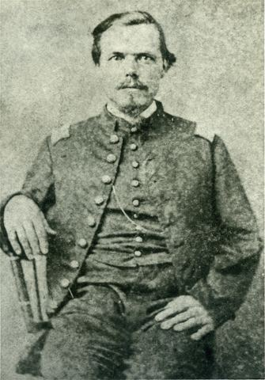
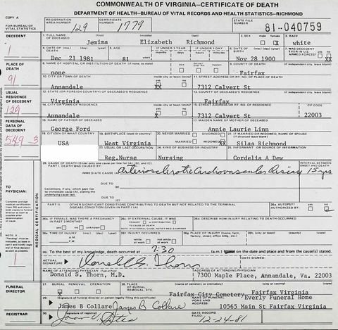
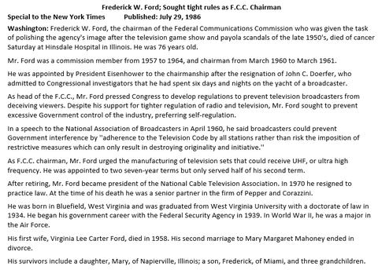
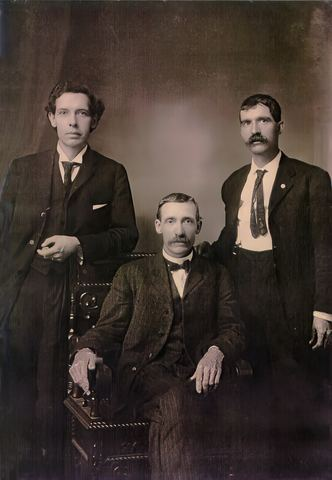
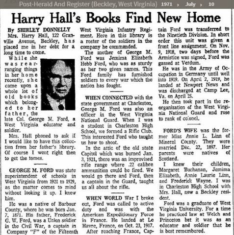

George Michael Ford
1871–1941
Life Story
George attended the rural schools in his district and Fairmont State Normal School; A.B., West Virginia State University, 1892 and Law degree, LL. B in 1896.
He had a commendable military career. He was a Cadet at West Virginia University, 1887-92, graduating 1st lieutenant. 191, a Major in the Adjutant General's Department, 1914. He then resigned major's commission, 1916, to accept a commission of Captain in the 2nd West Virginia Infantry; and answered the call for Mexican Border service, April 1917, with the 38th division; discharged April 25, 1919. He served from 1917-1919 during WWI, saw 6 months service overseas in command of Company B, 258th Infantry, 19th Division, which was on duty at Stenay when the Armistice was signed. He then accompanied this division as part of the Army of Occupation to the Valley of the Moselle and later transferred to the 37th Division for homecoming commanding Company M, 145th Infantry.
He was a Republican Mason (Knight Templar), and a Methodist. He was also an Honorary member of Spanish War Veterans; American Legion; Disabled War Veterans; Veterans of Foreign Wars, Sigma Chi, and Scabbard and Blade.
He then had a long and distinguished career as an educator in West Virginia. He was Principal of the Terra Alta graded schools, Preston County; Principal of Grafton High School; Principal of Concord Normal School; Head of the Department of Economics and American History, Marshall College; Superintendent of Bluefield Schools; Superintendent of Brown's Creek District Schools, McDowell County; Superintendent of the Dunbar Schools; He was elected Superintendent of Free Schools in 1920 for all of West Virginia; re-elected in 1924. President of the West Virginia State Education Association in 1921.
Life events
| Born | 7 Jan 1871 · Cove, West Virginia Map |
|---|---|
| Lived | 1880 · Cove, West Virginia Map · Occupation: Homeworker; Marital Status: Single |
| Married | 27 Dec 1897 · Annie Laurie Linn · Mineral County, West Virginia Map |
| Lived | 1900 · Plymouth, West Virginia Map |
| Occupation | 1900 · School Teacher  |
| Occupation | 5 Mar 1901 · Huntington, West Virginia Map · Professor at Marshall College.  |
| Occupation | 13 Jul 1905 · Huntington, West Virginia Map · Attorney, Professor at Marshall College  |
| Lived | 1910 · Bluefield, West Virginia Map |
| Lived | 3 Mar 1912 · Bluefield, West Virginia Map |
| Lived | 1920 · House #32, Guthrie, West Virginia Map  |
| GM Ford - Running For Office | 23 Jan 1920 · Charleston, West Virginia Map |
| Lived | 1924 · Dunbar, West Virginia Map · Occupation: State Superintendent of Schools |
| Lived | 1930 · 809 West Virginia Ave, Dunbar, West Virginia Map  |
| Lived | 1935 · Dunbar, West Virginia Map |
| Lived | 1 Apr 1940 · 811 West Virginia Ave, Dunbar, West Virginia Map · Age: 69. Married. Relation to Head of House: Head |
| Died | 21 Aug 1941 · Huntington, West Virginia Map |
| Probate | 28 Aug 1941 · Kanawha, West Virginia Map |
| Buried | Ford Family section, Athens Cemetery, 507 Cemetery Rd, Princeton, West Virginia Map · Athens Cemetery, Athens, West Virginia The Ford headstone is framed by two overgrown evergreens that obscure the name. Buried there are: Geo M., Annie LL Ford; Harry Hall, Margaret Ford Hall. Linn Ford Saunders, Phil Saunders share a marker. |
Family



- Margaret Buchanon Ford1899–1995

Jemima Elizabeth Ford1900–1981 Annie Laurie Linn Ford1907–1988
Annie Laurie Linn Ford1907–1988
Frederick Wayne Ford1909–1986
Photos
George Michael Ford

George Michael Ford
Margaret Buchanon Ford
George Michael Ford
Annie Laurie Linn

George Michael Ford
George Michael Ford
Jemima Elizabeth Ford
Margaret Buchanon Ford
George Michael Ford
Annie Laurie Linn
Frederick Wayne Ford
Annie Laurie Linn Ford
George Michael Ford
Annie Laurie Linn
Frederick Wayne Ford
Annie Laurie Linn Ford
George Michael Ford
Annie Laurie Linn
George Michael Ford

George Michael Ford
George Michael Ford
George Michael Ford